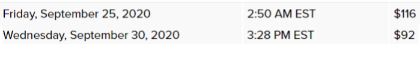

StockX terms and Overview
StockX is a middle man platform that allows resellers to sell their items without the worry of scammers.
Here is how StockX works:
- The seller ships in their item to StockX
- StockX only accepts new items. In this step, StockX will review the item and make sure the item is new and authentic
- The item gets shipped to the buyer.
First, goto StockX and make an account. Type in the name of your item and click its page. You may run into terms that you are unfamiliar with, such as "Ask" and "Bid"; find out what these terms mean below:
- Term: Last Sale
- Definition: How much the item last sold for.
- Term: Ask
- Definition: How much a seller is asking any buyer to pay for their item. If a buyer buys for your ask price, then the sale will take place, and your payout will be: (item's ask price - transaction fee - payment processing fee).
- Term: Bid
- Definition: How much a buyer is bidding to buy an item. If a seller sells to the highest bidder, then the sale will take place, and your payout will be: (item's highest bid - transaction fee - payment processing fee).

When to sell your item on StockX
You should already be aware of whether the item has resale or not when you determined which item you were going to buy. If it is release day for Supreme, it is best to sell your item soon after the release to maximize profits. Seconds to minutes after the Supreme release, go on StockX and sell your item(s) to the highest bidder. Around under five minutes after the release, StockX will have the item set to their default, two business day ship time that they have set for all items on the site. Around after five minutes, StockX goes into its system and changes all newly released Supreme items to five business day shipping. Only sell if you order preview page says you get five business days to ship and not anything under. You should only sell if you have five business days to ship because Supreme usually takes 3-4 business days to get to your house. Suppose you sell your item and agree to ship with only two business days. If you fail to deliver on that promise, StockX will charge you a 15% penalty fee and may ban your account for fraud, as you have failed to fulfill a financial transaction. Selling your item soon after the drop ensures you sell for most likely the highest you will ever be able to sell your item.
Things to Beware of when reselling on StockX
Often around a few days after a release, a Supreme item's resell price starts to drop. Prices often drop because resellers see their item losing resell, so they get scared and undercut the next seller to ensure they get rid of their item. Then other resellers do the same thing, and it creates this snowball effect and self-fulfilled prophecy. To combat the price drops, sell your item as soon as StockX gives you five business days to ship. If StockX asks you for a return address or a PayPal payment method, go ahead and provide the details to ensure you can receive your item back if anything goes wrong and so you can get paid. 